Абсолютная точность
до 1 сантиметра
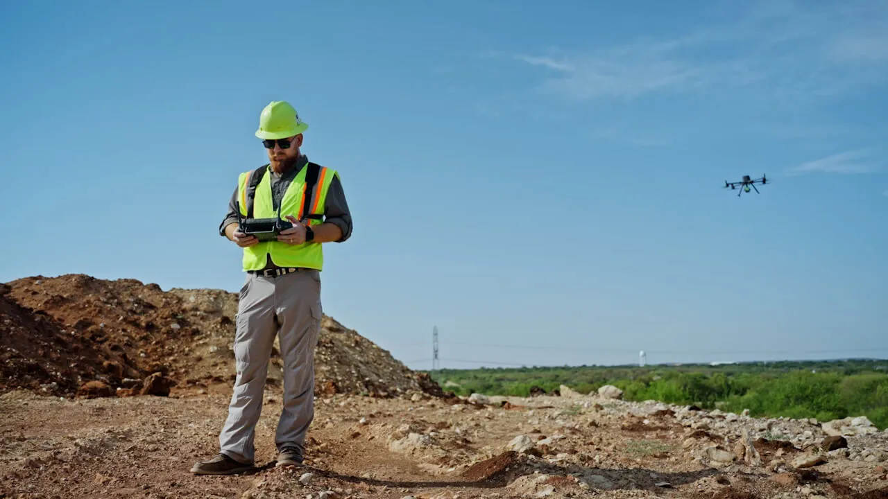
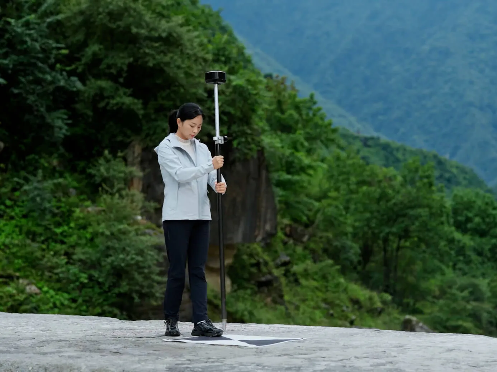
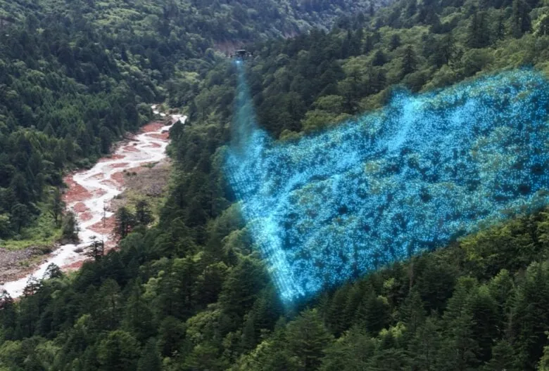
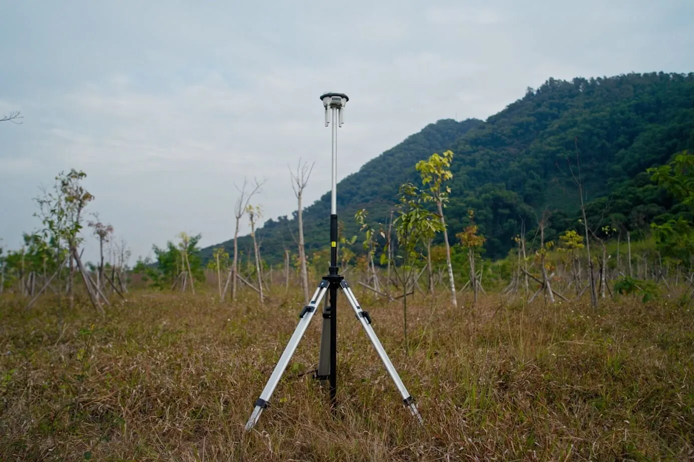
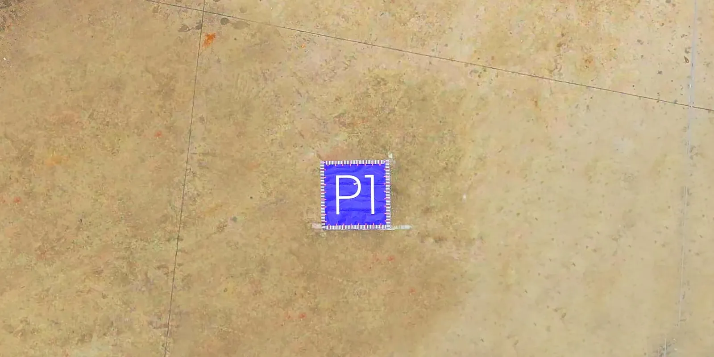
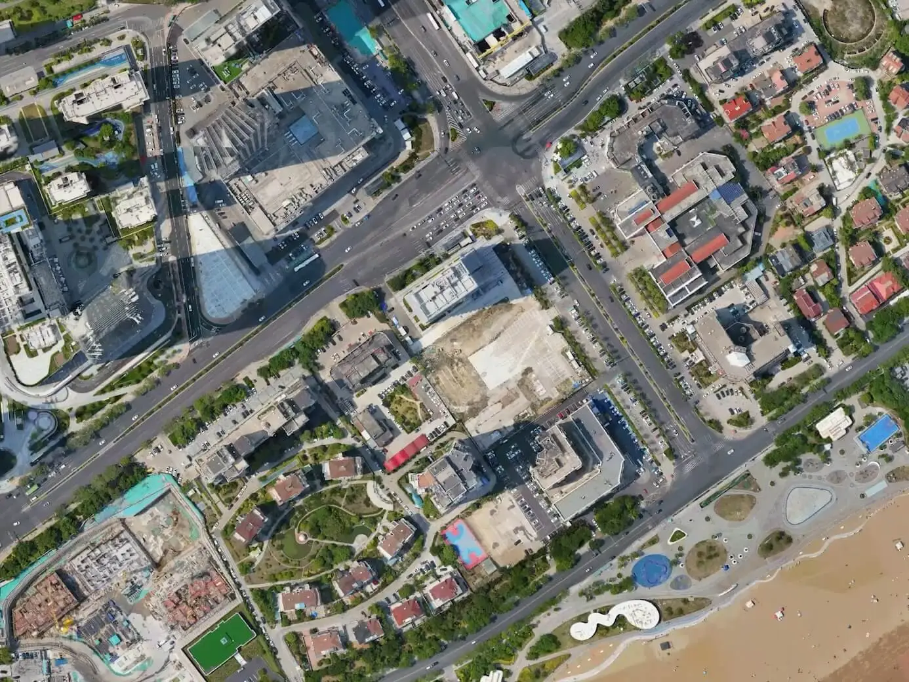
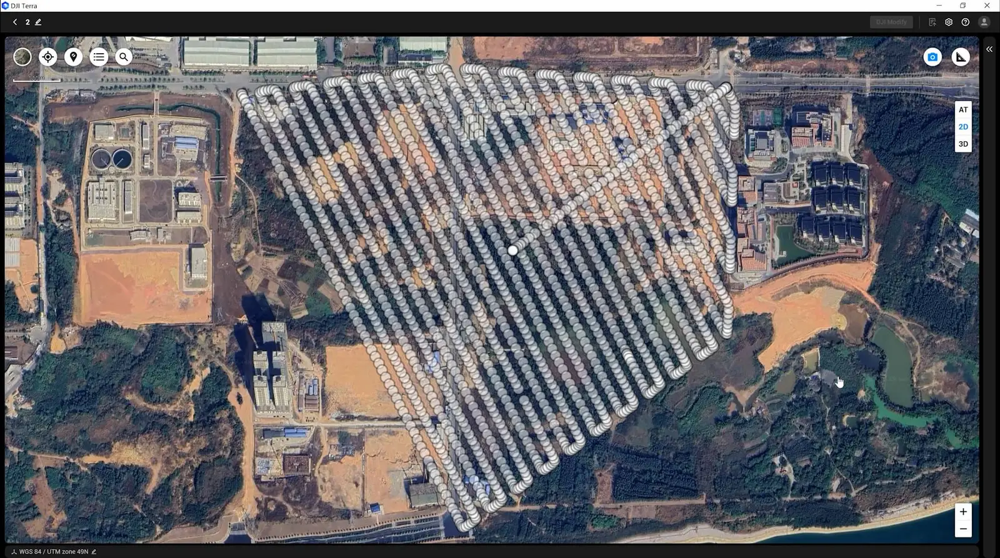
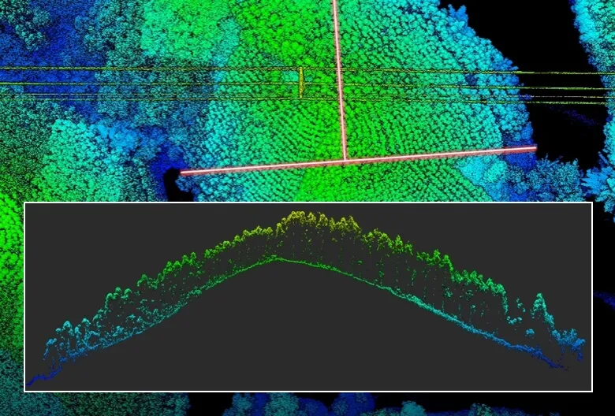
Облако точек: исходные данные съёмки — миллионы измерений.
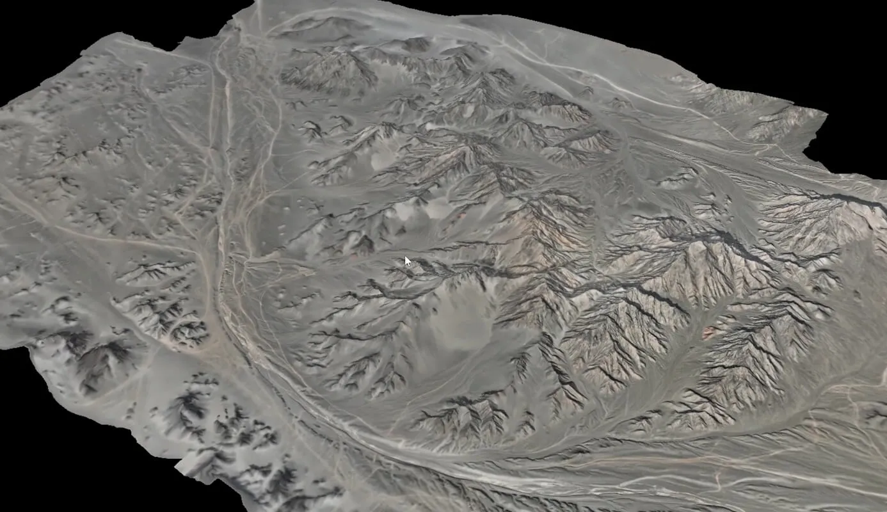
TIN-сетка: поверхность рельефа для расчётов и проектирования.
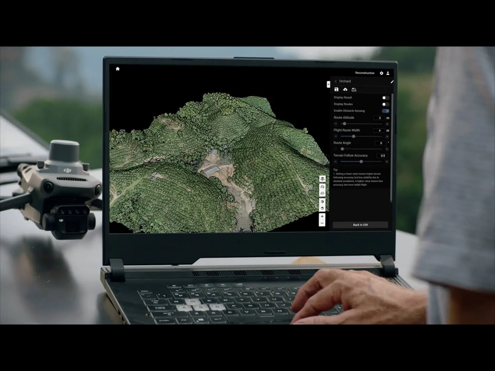
3D-модель: текстурированный двойник объекта для работы и презентаций.
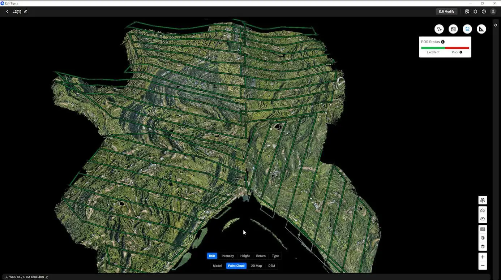
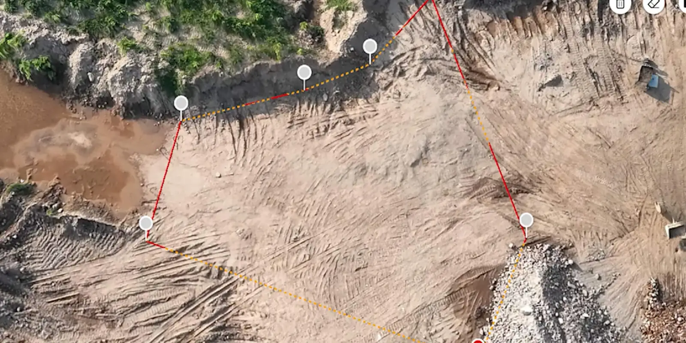
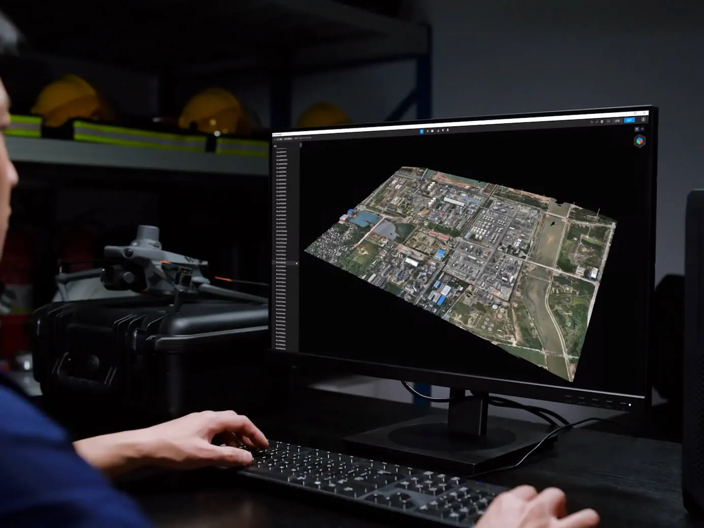